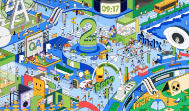
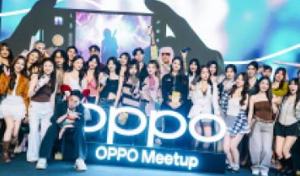
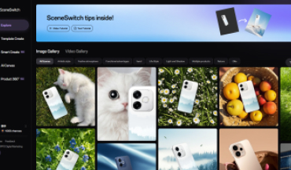
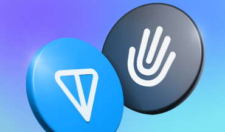
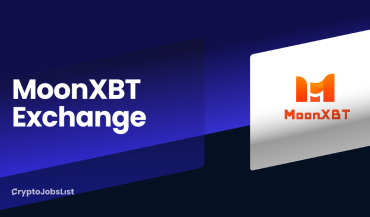

Personal Introduction
Turning emerging technologies into real-world adoption.
I’m a global community and growth strategist with 8+ years of experience across consumer technology, AI, Web3, fintech, and high-growth digital businesses.
My work focuses on helping new technologies become easier to understand, easier to trust, and easier to adopt. I connect product storytelling, community growth, creator ecosystems, GTM execution, and user feedback loops to move projects from early-stage ideas to measurable market impact.
Across both 0→1 and 1→N stages, I have led global community programs, creator operations, AI adoption initiatives, product launch campaigns, and Web3 growth systems across Southeast Asia, Europe, and global markets.
- 8+Years in AI, fintech, and consumer technology
- 0→1→NScaled community growth, creator ecosystems, and global operations
- 500+KOCs and creators managed across overseas markets
Core Expertise
AI Adoption & AIGC Enablement
Building practical AI workflows for content creation, community engagement, chatbot interaction, and internal productivity.
Global GTM & Product Storytelling
Translating complex product features into clear narratives, launch campaigns, and localized communication strategies.
Community-Led Growth
Designing user, KOC, creator, ambassador, and moderator systems that drive engagement, feedback, and long-term retention.
Creator & Content Ecosystems
Activating creators through structured campaigns, content missions, incentive systems, and cross-platform amplification.
Selected Project Experience
A portfolio of AI enablement, global product launches, creator ecosystems, decentralized identity, virtual AI idols, and Southeast Asia growth operations.

Global Ecosystem · 13+ Markets
OPPO Global Community & Creator Ecosystem
A global creator and community growth system for product launches, photography, AI features, and authentic UGC.
- Built and managed a 500+ KOC / creator resource pool.
- Drove 15K+ UGC assets, 36M+ impressions, and 1M+ engagements.
- Created a repeatable community-led growth model.
Project Overview
A global community and creator growth system built to strengthen OPPO’s overseas user ecosystem, activate high-potential KOCs, and continuously drive authentic UGC around product launches, photography, AI features, and user stories.
My Role
Led overseas community operations, creator ecosystem building, KOC activation, campaign planning, and cross-market collaboration across 13+ countries.
Key Work
- Built and managed a 500+ KOC / creator resource pool across global markets.
- Designed creator grading, task assignment, content review, and performance evaluation systems.
- Planned recurring UGC campaigns including #ShotonOPPO, #OPPOMoments, AskOPPO, ambassador tasks, and community challenges.
- Connected community content with product launches, local market needs, social media amplification, and user feedback collection.
Impact
- Supported 13+ overseas markets with structured creator and community operations.
- Drove 15K+ UGC assets, 36M+ impressions, and 1M+ engagements through content programs.
- Helped establish a repeatable community-led growth model for product launches and long-term user engagement.

May 2025 – Oct 2025
OPPO Reno14 Series Global Community-Led IMC Launch
A global community-driven launch campaign connecting product storytelling, creator content, feedback, and localized market execution.
- Generated 2,700+ UGC assets.
- Achieved 1.1M engagements and 47.7M+ impressions.
- Collected 120+ product feedback items.
Project Overview
A global community-driven launch campaign for the OPPO Reno14 Series, connecting product storytelling, creator content, user feedback, photography challenges, AI feature education, and localized market execution.
My Role
Led the global community-side launch strategy and execution, coordinating creator programs, content campaigns, user engagement, and market collaboration.
Key Work
- Built an “Always-on + Campaign” launch model across AMA, #OPPOMoments, #ShotonOPPO, IoT, gaming, photography, and niche creator circles.
- Translated Reno14 product features into user-friendly content themes, including AI imaging, Mermaid Design, gaming, party photography, and productivity scenarios.
- Activated ambassadors, KOCs, power users, and origin users to generate launch-period UGC and product feedback.
- Worked with local teams to support content collection, creator execution, and multi-market amplification.
Impact
- Generated 2,700+ UGC assets.
- Achieved 1.1M engagements and 47.7M+ impressions.
- Recruited 20 power users and 100 origin users in Thailand and Indonesia.
- Collected 120+ product feedback items to support product and community optimization.
 Mar 2025 – Mar 2026
Mar 2025 – Mar 2026
Global Community AI Enablement & Enterprise AIGC Optimization
A 0→1 AI enablement initiative bringing AIGC workflows into overseas community and marketing scenarios.
- Planned Ollie Chatbot prompt, image, and co-creation flows.
- Optimized SceneSwitch through model and workflow evaluation.
- Enabled around 50% of selected visual assets to become AI-assisted.
Project Overview
A 0→1 AI enablement initiative designed to bring AIGC tools, chatbot interaction, image generation, prompt systems, and AI-assisted content workflows into real overseas community and marketing scenarios.
My Role
Drove AI use-case planning, chatbot experience design, prompt engineering, AIGC workflow optimization, and internal adoption across community and creative production.
Key Work
- Planned Ollie Chatbot features including prompt logic, interaction design, image generation, and content co-creation flows.
- Optimized SceneSwitch and related AIGC workflows through model evaluation, ComfyUI orchestration, template standardization, and video API integration.
- Translated AI capabilities into practical use cases for social content, campaign assets, community engagement, and creative production.
- Helped standardize prompts, templates, and workflows to improve repeatability and production efficiency.
Impact
- Built a 0→1 AI enablement workflow for overseas community and creative scenarios.
- Enabled around 50% of selected TVC and social visual assets to become AI-assisted.
- Improved creative production speed, cost efficiency, and internal AI adoption.

Mar 2024 – Oct 2024
HumanCode Decentralized Identity System
A palmprint-based Proof of Personhood project for privacy-preserving identity verification in Web3.
- Built Twitter/X, Telegram, and LinkedIn channels from scratch.
- Drove 3,000+ new users within one week.
- Supported fundraising and Web3 event execution.
Project Overview
HumanCode is a palmprint-based Proof of Personhood decentralized identity project, designed to explore privacy-preserving identity verification and user authentication in Web3.
My Role
Supported growth, community building, fundraising materials, market strategy, and event execution during the project’s early-stage expansion.
Key Work
- Built Twitter/X, Telegram, and LinkedIn channels from scratch.
- Recruited, trained, and managed community moderators.
- Designed referral, airdrop, EDM, SEO, Twitter ads, KOL, and giveaway growth strategies.
- Supported pitch decks, whitepapers, investor communication, and Web3 event execution.
Impact
- Helped drive 3,000+ new users within one week through growth campaigns.
- Supported fundraising and market-facing materials for a project valued at approximately $5M.
- Participated in major Web3 events including Token2049, Consensus, and TON Hackathon-related activities.

Feb 2023 – Sep 2023
Delysium / GPT2338 Virtual AI Idol
A virtual AI idol project combining conversational AI, voice interaction, AI-generated visuals, and Web3 activation.
- Built GPT-3.5 chatbot experiences with character prompts.
- Integrated speech recognition and synthesis for voice interaction.
- Fine-tuned Stable Diffusion workflows for AI avatar visuals.
Project Overview
A virtual AI idol project combining conversational AI, voice interaction, AI-generated visual identity, and Web3 community activation.
My Role
Worked on AI character experience, chatbot interaction, visual identity generation, community growth, and Web3 market activation.
Key Work
- Built chatbot experiences using GPT-3.5 and character-profile prompt engineering.
- Integrated conversational AI with speech recognition and synthesis to support voice-based interaction.
- Fine-tuned Stable Diffusion workflows for AI avatar and visual content generation.
- Supported Web3 community campaigns and offline event activation.
Impact
- Helped launch an AI-powered virtual idol experience combining text, voice, and visual generation.
- Supported market activation around the Delysium ecosystem and GPT2338 IP.
- Contributed to event promotion and community engagement around major Web3 moments.

Sep 2021 – Feb 2022
MoonXBT Southeast Asia Growth & Community Operations
A crypto and U.S./HK stock trading platform expansion project focused on Southeast Asian market growth.
- Developed localized growth strategies for Vietnam and Indonesia.
- Planned trading competitions, rewards, and community campaigns.
- Built analytics dashboards for growth and retention optimization.
Project Overview
A crypto and U.S./HK stock trading platform expansion project focused on Southeast Asian market growth, trading user acquisition, community operations, and localized campaign execution.
My Role
Led Southeast Asia operations, market research, community growth, campaign planning, and ambassador collaboration.
Key Work
- Developed localized growth strategies for Vietnam, Indonesia, and other Southeast Asian markets.
- Planned trading competitions, affiliate rewards, holiday campaigns, and community activities.
- Built and operated Telegram, Facebook, LinkedIn, and Reddit communities.
- Created Google Analytics dashboards to track registration, retention, user behavior, channels, and SEO performance.
Impact
- Supported MoonXBT’s growth into a top crypto exchange position in Vietnam and Indonesia.
- Improved community engagement through 24/7 operations and global ambassador collaboration.
- Built data-driven dashboards to support growth, retention, and product optimization.
Let’s build what people actually use.
I’m always open to conversations around AI adoption, global growth, consumer technology, community strategy, creator ecosystems, and Web3 innovation.
If you’re building a product that needs both strategic thinking and hands-on execution, feel free to reach out.